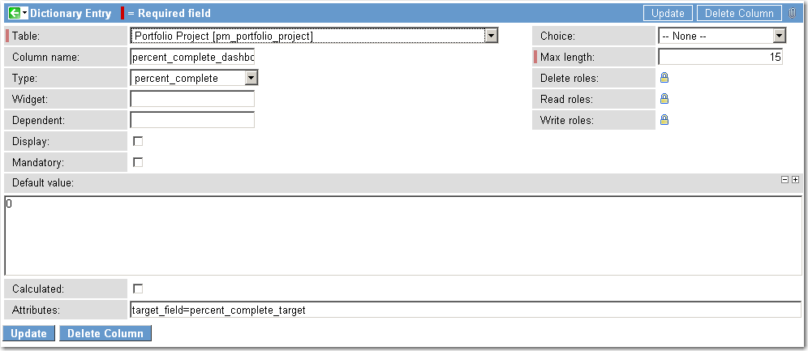

Creating a Percent Complete Field
| |
Note: This article applies to Fuji. For more current information, see Percent Complete a Field Type at http://docs.servicenow.com
The ServiceNow Wiki is no longer being updated. Please refer to http://docs.servicenow.com for the latest product documentation. |
Contents
1 Overview
Administrators can create percent complete fields, which accept decimal input and appear as progress bars when displayed in lists. For example, use a percent complete field to set the completion percentage for a task or project in a form and then see that percentage displayed as a progress bar in a list.
Administrators can also configure views that compare actual progress with a target value to determine if goals are being met and then apply color to provide visual alerts where progress does not meet expectations.
2 Creating a Percent Complete Field
To create a percent complete field, create a field with a type of Percent Complete. (Calgary release)
2.1 Converting an Existing Field
You can convert any decimal field into a percent complete field.
- Right-click the decimal field's label and select Configure Dictionary (Personalize Dictionary in versions prior to Fuji).
- Change the Type field from Decimal to Percent Complete.
- Click Update.
3 Target Field Attributes
Add an optional attribute (target_field) to the percent_complete field to compare the actual completion percentage of a task or project with a target percentage in a different decimal field that specifies where the task should be at this point. If a target field is not specified, the target of 100 is assumed.
To add the attribute:
- Right-click the % Complete field in a form.
- Select Configure Dictionary (Personalize Dictionary in versions prior to Fuji).
- In the Dictionary Entry form, add the following attribute:
target_field=percent_complete_target
- 
- Update the dictionary record.
- In the list, a gray bar appears behind the colored bar to indicate the target value. The gray target bar appears only if you defined a target field.


{kind=link}
{kind=link}
{kind=link}
4 Target Threshold Colors Attribute
If the target_field attribute is configured, a second attribute called target_threshold_colors enables an administrator to define the following:
- Different thresholds at which the colored bar should change color
- A specific color for each threshold
The format of this attribute's value is number1:color1;number2:color2 and so on. Use this attribute to apply warning colors to completion percentages that are lower than target percentages. These values are defined as the percentage of target accomplished. For example, a value of 0:red;50:yellow;90:green displays a red bar if the progress to target pecentage is between 0-49. If the percent of target is between 50 and 89, the color is yellow. Percent of target 90 and above displays in green. Completion percentages that exceed target percentages also display in green. Order the color attributes from the smallest percentage to the largest.
If you do not specify a target_field, then a target of 100 is used, allowing you to use the color thresholds with a single field value.
target_field=percent_complete_target, target_threshold_colors=0:tomato;50:khaki;90:lightgreen
Examples of percent of target calculation using the colors defined above:
| Target Percent | Percent Field Value | Percent of target calculation | Color |
|---|---|---|---|
| 100 | 40 | 40% | tomato |
| 65 | 59 | 90.7% | lightgreen |
| 15 | 10 | 66.7% | khaki |
{kind=link}